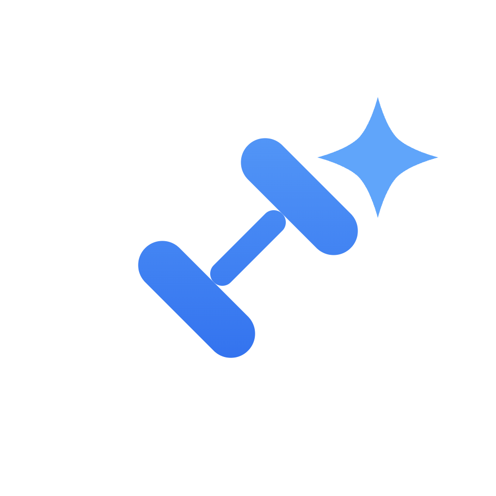
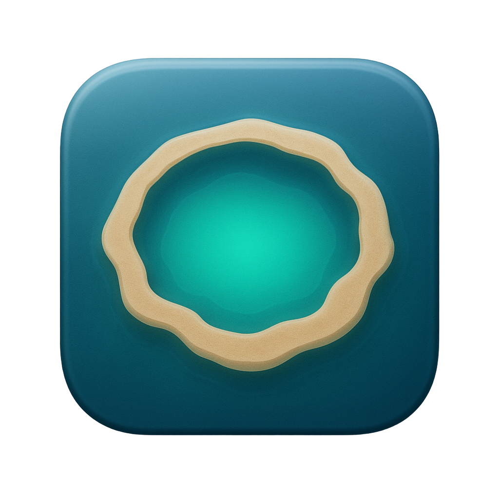
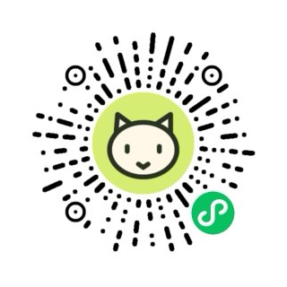
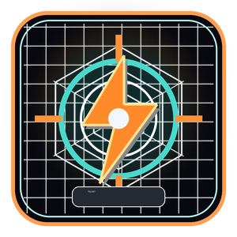
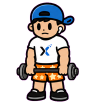
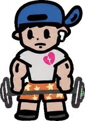
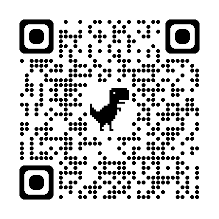

杨锟 / Killian Yang
中南大学计算机学院信息安全本科。专注 AI 产品方向。
我更关注从问题定义到产品落地的完整链路：能拆需求，也能写代码；能快速验证，也能沉淀方法。
中南大学计算机学院信息安全本科。专注 AI 产品方向。
需求调研、竞品分析、PRD、原型设计，能够把模糊想法拆成可执行的功能路径。
熟悉 SwiftUI、Python、网页开发和大模型 API 集成，能独立推进轻量产品从 0 到 1，也能完成 agent 的设计与开发。
能独立产出产品文档、公众号推文、新人教学材料与宣发内容，把产品讲清楚、让用户用起来，并运用宣发在个人社媒账号扩大产品触达。
在金融、互联网等不同领域都能快速吃透业务知识，并迁移到产品判断中；同时把探索过程沉淀为团队可复用的技术分析与知识资产。
正在装订作品册…

把 AI 私教装进口袋：生成能直接开练的训练计划，练的时候从侧面拍一段，让 Apple Vision 看懂你的深蹲、硬拉和卧推。已上架 App Store。
核心体验：选目标、报状态，拿到能直接开练的一周计划；动作视频在本地完成识别、打分，并指出下一次要改哪里。
记录与复盘：饮食、体重和训练历史汇总在同一处；配套 Apple Watch 与桌面小组件，训练记录和进度不用回手机里翻。
产品取舍：AI 回复不写成大段文本，只给下一次训练马上能用的动作修正和饮食建议。

把 MacBook 的刘海变成媒体控制、日历和系统监控入口的开源 macOS 应用：切歌、看日程、查系统状态，抬头就能完成。
参与方式：以 Collaborator 身份参与维护，已合并统计面板本地化（PR #544）与全天事件日历滚动修复（PR #566），并提交 AI 编程 Agent 管理中心的产品提案（Issue #539）；持续参与 Issues 维护。
给 AI 编程工作流做的 macOS 本地工作界面：Agent 需要审批、提问或完成时，从灵动岛直接跳回对应终端，让多任务只在真正需要你时打断。
参与方式：团队核心成员，参与产品设计、功能开发与发布迭代；产品已正式发布并持续迭代。
一张照片、一段视频，捏一捏、拉一拉，几秒做成聊天里会动的怪表情。14 种预设加自由捏图，无需注册、无水印，网页和微信小程序都能玩。
怎么玩：上传照片选一个怪相玩法——变猫、变狗、捏脸、拉长、揉皱、融化、漏气，或者被消息震飞；补一句台词、调力度和速度，导出循环 GIF。
视频也能做：截取最长 6 秒的片段，选原片、倒放或来回播放，加字幕，直接导出 GIF。
体验入口：网页打开即用，照片在浏览器里处理、不上传服务器；也可以打开微信小程序，或扫下方小程序码。导出的 GIF 没有水印。

微信扫码打开小程序一句话或一张参考图，就能给 Codex 桌面端换一套主题：生成后调强调色、背景模糊和压暗，实时预览，一键应用，还能导出主题包分享给朋友。
核心能力：所有主题保存在本机，支持导入导出 .ctheme 包和菜单栏快捷切换；生成后不满意可以继续调，不需要懂代码。
大断联后的第七年，你守着小镇最后一间书店。七天里接待六位来客，听懂他们的故事，推荐对的书——每一次对话都在改变结局。
怎么玩：每天门铃响起，接待一位来客，选出回应，再从 24 本书里推荐一本；希望值和声誉随选择变化，第七天走向四种结局之一。
书中剧场：进入《福尔摩斯探案集》等书里，与角色继续对话；自由书库随时可以翻书、看 AI 导读。
体验：浏览器打开即玩，完整一周目约 25 分钟，建议戴耳机、关灯、全屏。

六项 30 秒内完成的小游戏，测出你的 FPS 天赋：反应、手速、视野、追踪、记忆、协调，最后生成一张六维雷达图。抖音扫码就能玩，成绩留在本地。
六项挑战：反应速度、极限手速、视野广度、动态追踪、顺序记忆、手眼协调，每项 30 秒左右，并记录本地历史最佳成绩。
视觉与交互：黑橙电竞 HUD、移动端优先布局和即时反馈动效，让测试更像一个可以分享的小游戏。
体验方式：抖音 App 38.2.0 及以上版本扫码进入；也可以先在网页预览里直接玩。
一场由 AI 主持的恋爱法庭：两个人各自说清委屈，AI 帮彼此看到误会在哪，再一起协商真正做得到的和好方式。也有小作文、和好卡和真心话大冒险。
小作文：先写、先存草稿，AI 只给可编辑的候选；确认后生成只读链接发给对方，不用两个人同时在线。
恋爱法庭：文字或语音倾诉，双方都授权后才揭晓；系统不替人宣布和好，也不强制完成任务。
平时相处：和好卡可以领取、暂缓和确认使用；真心话大冒险保留六回合交替玩法。

给 Codex 桌面端加一只会动的桌宠：17 个角色可选，原创健身小人、海贼王、海绵宝宝都有，等待、运行、审阅时会播放不同动作。
角色集合：现有 17 个桌宠，按原创、海贼王与海绵宝宝分类。
交付内容：每个桌宠都有 pet.json、spritesheet.webp 和动作预览图，覆盖 idle、running、waiting、review 等 Codex 状态。
使用方式：克隆仓库后运行 ./install.sh all 安装全部桌宠，或运行 ./install.sh one-piece/luffy 安装单个角色。

一个写给 AI 产品同行的博客：把做产品时的判断、踩坑和复盘写成能读完的文章，而不是只躺在收藏夹里。
内容方向：AI 时代个人 IP、产品判断、应用开发复盘、作品集建设与学习笔记；在 Notion 里写作，站点由 NotionNext 生成。
当前首篇：《AI 时代个人 IP 的三层结构：自媒体账号、个人主页与知识库》。

扫码进入一套给 AI 产品求职和学习用的知识库：拆解行业案例、产品方法和项目复盘，把零散收藏变成能反复查阅的笔记。
内容结构：按行业研究、产品方法、岗位准备和项目复盘分版块建索引，每个结论尽量附来源和复盘记录。
沉淀价值：把临时学习变成长期资产，需要时能快速找到某个行业、方法或项目复盘。
欢迎联系我聊 AI 产品与应用开发。也可以通过抖音了解更多日常动态。